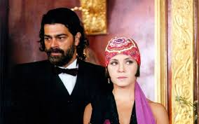

Notícias das ultimas novelas
Casal principal e sequestrado no ultimo capitulo da novela Paixão Ardente.
No ultimo capitulo da novela Paixão Ardente o casal preferido dos fãs é sequestrado e ameaçado deixando fãs preocupados
Novela mexicana Amor Imposible faz final inexperado e fãs ficam decepcionados.
A novela Amor Imposible faz um final inexperado onde casal principal morre e deixa os fãs a loucura
Corona vírus impede de gravar novelas.
Por causa da pandemia as novelas estão ficando sem capitulos novos, fazendo as esmissoras passarem reprises

Vidente Ana Carmen fala o final tragico da Elizabeth em Futuro Imprevisto.
A vidente Ana Carmen fala o final de Elizabeth e deixa fãs da personagem chocados